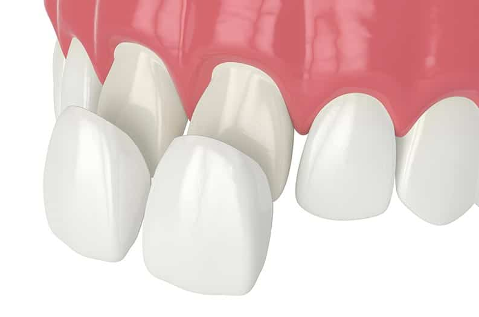
oleh: drg Muhammad Dian Firdausy, M.Sc(DMS)
Departemen Dental Material
FKG UNISSULA
Bonding adalah istilah klinis untuk proses adhesi material restorasi terhadap struktur gigi. Pemahaman mekanismenya menentukan bagaimana sebuah restorasi dirancang, bukan sekadar bagaimana ia dipasang.
Kohesi adalah gaya tarik-menarik antar partikel sejenis. Gaya ini menyebabkan suatu zat cenderung mempertahankan bentuknya dan tidak dengan mudah menyebar atau melekat pada zat lain tanpa bantuan gaya adhesi.
Karakteristik: kohesi terjadi pada material yang sama (contoh: air dengan air, resin dengan resin). Kekuatan kohesi ditentukan oleh ikatan antar molekul sejenis, seperti ikatan hidrogen pada air atau ikatan kovalen pada polimer.
Contoh: tetesan air yang membentuk bulatan di atas permukaan kaca; resin komposit yang saling melekat membentuk massa yang koheren.
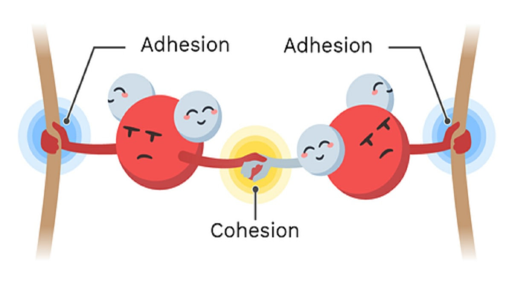
Adhesi adalah gaya tarik-menarik antar partikel tidak sejenis. Dalam kedokteran gigi, adhesi terjadi antara material restorasi dan struktur gigi, baik melalui interaksi mekanis, kimiawi, maupun mikromekanis.
Karakteristik: adhesi melibatkan dua material yang berbeda (contoh: resin komposit dengan dentin, GIC dengan enamel). Keberhasilan adhesi bergantung pada wetting, kebersihan permukaan, dan kompatibilitas kimiawi antara adhesive dan adherend.
Contoh: perlekatan resin komposit pada enamel yang dietsa; ikatan ionik antara GIC dan hidroksiapatit gigi.
Pengertian: ikatan kimiawi primer adalah gaya tarik-menarik kuat antar atom yang membentuk molekul atau senyawa, meliputi ikatan ionik, kovalen, dan metalik.
Karakteristik: energi ikatan tinggi (150–1000 kJ/mol), bersifat stabil dan menentukan kekuatan intrinsik material. Ikatan ionik terjadi melalui transfer elektron antar atom bermuatan, ikatan kovalen melalui pemakaian bersama pasangan elektron, dan ikatan metalik melalui "lautan elektron" yang terdelokalisasi.
Contoh dalam kedokteran gigi: ikatan ionik antara gugus karboksil GIC dan Ca²⁺ hidroksiapatit; ikatan kovalen dalam jaringan polimer resin komposit; ikatan metalik dalam aloi amalgam dan kerangka logam gigi tiruan.
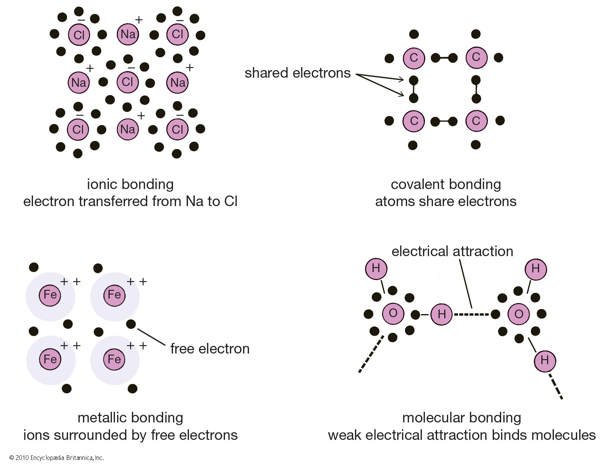
Pengertian: ikatan sekunder adalah gaya tarik-menarik lemah antar molekul, jauh lebih rendah energinya dibanding ikatan primer, namun berperan penting dalam fenomena pembasahan dan adsorpsi.
Karakteristik: energi ikatan rendah (2–40 kJ/mol), bersifat reversibel dan dipengaruhi jarak antar molekul. Ikatan hidrogen terjadi antara atom H yang terikat pada atom elektronegatif (O, N) dengan atom elektronegatif lainnya. Gaya van der Waals timbul dari fluktuasi sementara distribusi elektron yang menciptakan dipol sesaat.
Contoh dalam kedokteran gigi: ikatan hidrogen dalam matriks kolagen dentin yang memengaruhi infiltrasi primer; gaya van der Waals yang berkontribusi pada adhesi awal resin hidrofobik terhadap permukaan gigi yang telah dikeringkan.
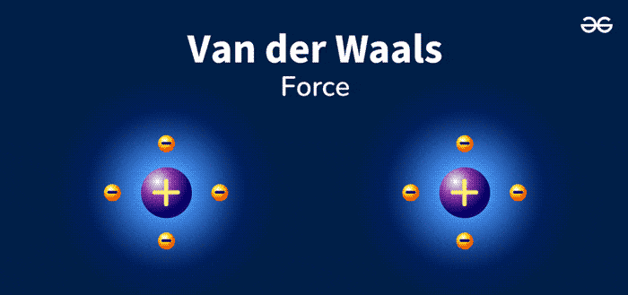
Wetting (pembasahan) adalah kemampuan cairan untuk menyebar dan membentuk kontak dengan permukaan padat. Sudut kontak (θ) mengukur derajat pembasahan: θ kecil (<90°) menunjukkan pembasahan baik, θ besar (>90°) menunjukkan pembasahan buruk. Dalam konteks adhesi gigi, pembasahan yang baik memungkinkan adhesive mengalir ke seluruh mikroporositas permukaan yang dietsa, memaksimalkan area kontak dan kekuatan ikatan.
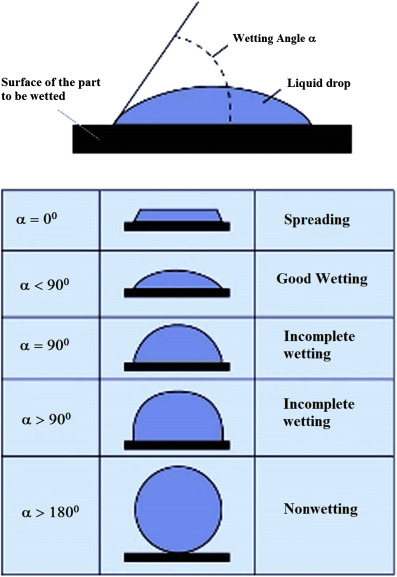
Tegangan permukaan adalah kecenderungan permukaan cairan untuk menegang seperti membran elastis akibat gaya kohesi antar molekul cairan. Semakin rendah tegangan permukaan suatu adhesive, semakin mudah ia menyebar pada permukaan padat. Tegangan permukaan dentin yang dietsa dan adhesive harus sesuai agar terjadi pembasahan optimal.
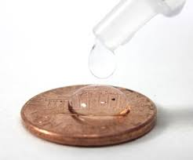
Viskositas adalah ukuran resistensi cairan terhadap aliran. Adhesive dengan viskositas rendah dapat mengalir lebih mudah ke dalam mikroporositas permukaan gigi yang dietsa. Monomer hidrofilik seperti HEMA ditambahkan untuk menurunkan viskositas adhesive dan meningkatkan penetrasi ke jaringan kolagen dentin yang lembap.
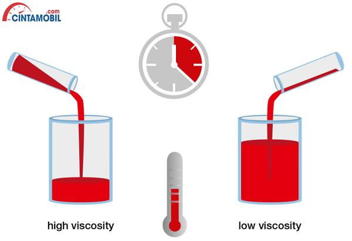
Adhesive joint adalah sambungan adhesif antara dua permukaan adherend yang disatukan oleh lapisan adhesive. Terdapat dua interface: interface 1 antara adherend pertama dan adhesive, serta interface 2 antara adhesive dan adherend kedua.
Komponen: adherend (substrat yang akan dilekatkan, misalnya gigi dan restorasi), adhesive (material perantara yang menghubungkan kedua adherend), dan interface (bidang kontak antara adhesive dan masing-masing adherend). Kekuatan adhesive joint ditentukan oleh kekuatan kohesi adhesive itu sendiri dan kekuatan adhesi pada kedua interface.
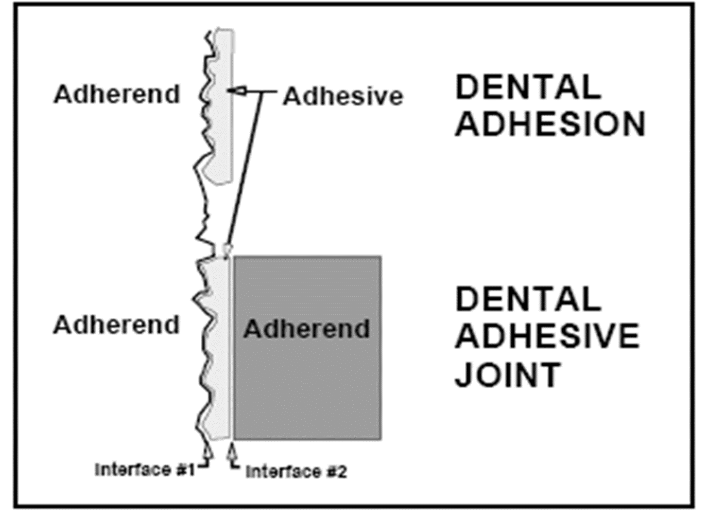
Bonding dalam kedokteran gigi bertujuan menciptakan perlekatan yang kuat dan tahan lama antara material restorasi dan struktur gigi. Berikut prinsip dan manfaatnya:
Amalgam tidak memiliki ikatan kimiawi terhadap struktur gigi. Retensinya murni interlocking fisik melalui undercut dan dovetail hasil preparasi kavitas konvensional.
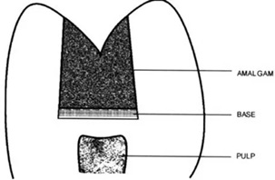
GIC membentuk ikatan ionik antara gugus karboksil asam poliakrilat dan ion kalsium hidroksiapatit gigi, menghasilkan ion-exchange layer yang menguat seiring waktu.
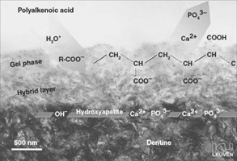
Enamel tersusun dari sekitar 96% mineral hidroksiapatit dalam bentuk prisma (rod) yang tersusun rapat dan teratur, dengan sisanya berupa matriks protein dan air. Struktur kristalin yang sangat termineralisasi ini menjadikan enamel substrat ideal untuk teknik etsa asam karena pola pelarutannya bersifat dapat diprediksi.
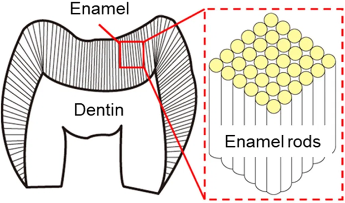
Buonocore (1955) pertama kali memperkenalkan teknik pengetsaan asam fosfat pada enamel untuk meningkatkan retensi mikromekanis resin. Asam fosfat 37% melarutkan kristal hidroksiapatit pada permukaan dan inti prisma enamel secara selektif, menghasilkan pola mikroporositas yang ditembus resin cair membentuk resin tag. Etsa asam menciptakan tiga pola: tipe I (pelarutan inti prisma), tipe II (pelarutan perifer prisma), dan tipe III (campuran).
arah kiri: pelarutan hidroksiapatit saat etsa
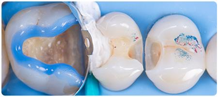
Setelah dietsa dengan asam fosfat 37% selama 15–30 detik, permukaan enamel menunjukkan pola mikroporositas yang khas di bawah SEM (Scanning Electron Microscope). Gambaran ini memperlihatkan area enamel prismatik yang teretsa dalam, siap diinfiltrasi oleh resin bonding. Mikroporositas ini meningkatkan luas permukaan dan menciptakan retensi mikromekanis yang esensial bagi keberhasilan bonding resin komposit.
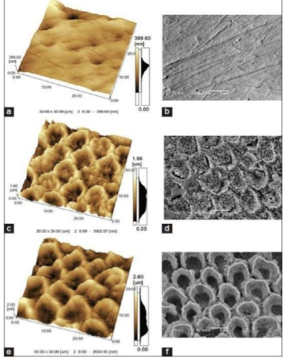
Area aprismatik pada permukaan enamel menunjukkan pola etsa yang kurang dapat diprediksi dibanding enamel prismatik. Pada sistem self-etch, etsa yang lebih ringan kerap menghasilkan pola etsa enamel yang lebih dangkal, sehingga sebagian klinisi menerapkan strategi selective enamel etching, yaitu mengetsa enamel secara terpisah dengan asam fosfat sebelum aplikasi self-etch primer pada dentin.
Josic et al., 2022, Dent Mater, 38(3), 472–488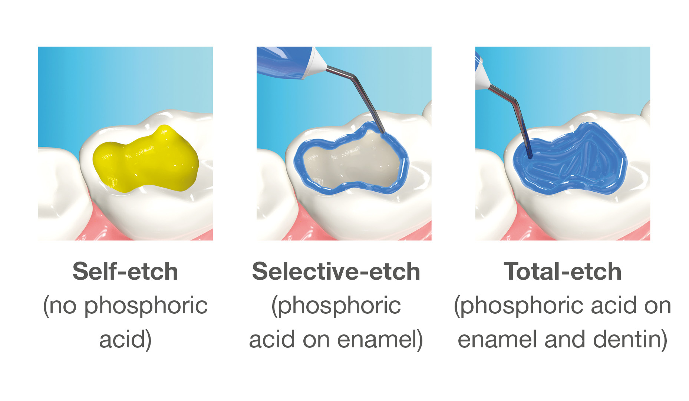
Dentin memiliki struktur jauh lebih kompleks dibanding enamel. Tubuli dentin berisi cairan dentin yang mengalir keluar akibat tekanan pulpa, sementara matriks kolagen tipe I menyusun sekitar 20% volume dentin. Kombinasi substrat basah, tubular, dan kaya kolagen ini menjadikan dentin jauh lebih sulit dibonding secara konsisten dibanding enamel.
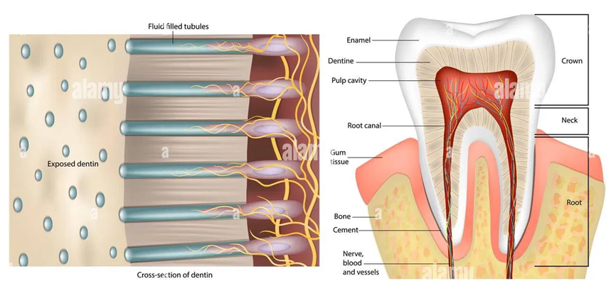
Preparasi kavitas dengan instrumen rotari meninggalkan smear layer, yaitu lapisan debris organik dan anorganik yang menutupi permukaan dentin dan menyumbat orifisium tubuli dengan smear plug. Smear layer menurunkan permeabilitas dentin sekaligus menjadi penghalang bagi resin adhesive untuk mencapai kolagen dan hidroksiapatit di bawahnya.
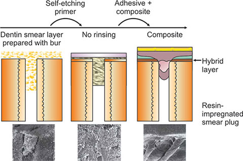
Dentin conditioner atau etsa asam melarutkan sebagian atau seluruh smear layer, membuka kembali orifisium tubuli, dan melarutkan komponen mineral pada permukaan dentin sehingga jaringan kolagen terekspos sebagai kerangka berpori yang siap diinfiltrasi resin.
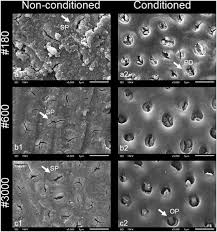
Resin monomer menginfiltrasi jaringan kolagen yang terekspos membentuk hybrid layer, yaitu zona interdifusi antara resin dan kolagen dentin, sementara resin yang masuk ke tubuli yang terbuka membentuk resin tag. Hybrid layer dan resin tag bersama-sama menjadi dasar mekanisme retensi mikromekanis pada bonding dentin generasi modern.
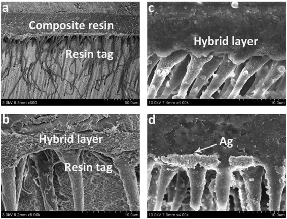
Bonding dentin sangat sensitif terhadap kontrol kelembapan. Dentin yang terlalu kering menyebabkan kolapsnya jaringan kolagen sehingga resin tidak dapat menginfiltrasi secara optimal ke dalam ruang interfibrilar. Sebaliknya, dentin yang terlalu basah (over-wet) meninggalkan lapisan air yang mengganggu polimerisasi resin dan menciptakan celah nano yang melemahkan interface adhesive-dentin.
Kedekatan dentin dengan pulpa gigi meningkatkan risiko sensitivitas pasca-operatif akibat iritasi kimiawi dari monomer yang tidak berpolimerisasi sempurna. Variabilitas teknik antar operator—mulai dari waktu etsa, teknik pengeringan, hingga ketebalan aplikasi adhesive—menjadi sumber utama inkonsistensi hasil bonding dentin di klinik. Oleh karena itu, bonding dentin memerlukan protokol yang ketat dan pemahaman mendalam tentang substrat dentin yang dinamis.
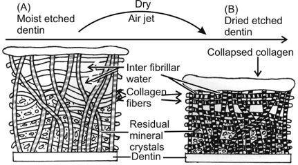
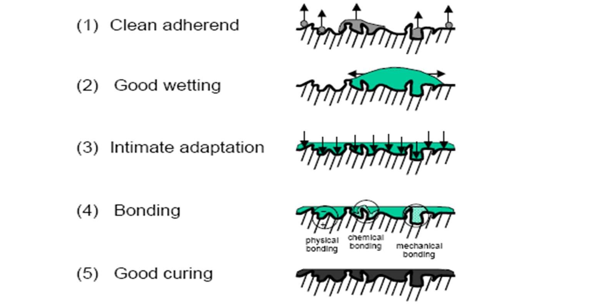
Pengertian: generasi pertama bonding agent menggunakan silane coupling agent untuk menciptakan ikatan antara resin dan enamel.
Karakteristik: kekuatan ikatan sangat rendah, hanya bekerja pada enamel, tidak efektif pada dentin.
Kelebihan: langkah pionir dalam bonding gigi. Kekurangan: kekuatan ikatan tidak memadai untuk aplikasi klinis.
Teknik: aplikasi langsung silane pada enamel tanpa etsa terpisah.
Pengertian: generasi kedua masih berfokus pada bonding enamel dengan formulasi yang sedikit ditingkatkan.
Karakteristik: masih sangat lemah pada dentin, kekuatan ikatan enamel sedikit meningkat.
Kelebihan: aplikasi lebih mudah dari generasi 1. Kekurangan: tetap tidak efektif pada dentin.
Pengertian: generasi ketiga memperkenalkan dentin conditioner sebagai langkah terpisah untuk memodifikasi smear layer.
Karakteristik: mulai efektif pada dentin meski kekuatan ikatan masih di bawah standar modern. Material yang digunakan: asam maleat, EDTA, atau asam nitrat encer sebagai conditioner.
Kelebihan: bonding dentin pertama yang dapat diterima. Kekurangan: multi-step, teknik sensitif, kekuatan ikatan bervariasi.
Pengertian: generasi keempat menerapkan teknik etch-and-rinse dengan tiga langkah terpisah: etsa asam fosfat, primer, dan bonding resin.
Karakteristik: kekuatan ikatan tinggi dan konsisten pada enamel maupun dentin. Material: asam fosfat 37%, primer aseton/etanol, bonding resin Bis-GMA.
Kelebihan: gold standard kekuatan ikatan. Kekurangan: prosedur panjang, teknik sensitif, risiko over-etching dentin.
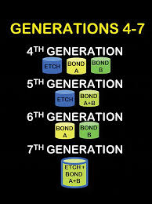
Pengertian: generasi kelima menyederhanakan etch-and-rinse menjadi 2 langkah dengan menggabungkan primer dan bonding resin dalam satu botol.
Karakteristik: kekuatan ikatan setara generasi 4 dengan prosedur lebih sederhana. Material: asam fosfat + combined primer-adhesive.
Kelebihan: lebih cepat, tetap andal. Kekurangan: tetap memerlukan etsa terpisah dan pembilasan.
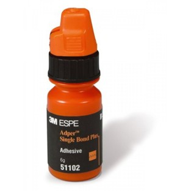
Pengertian: generasi keenam menggunakan self-etch primer yang mengandung monomer asam, menghilangkan langkah etsa dan pembilasan terpisah.
Karakteristik: dua langkah: self-etch primer + bonding resin. Material: monomer asam (MDP, 4-META) dalam primer, bonding resin terpisah.
Kelebihan: tidak perlu pembilasan, mengurangi risiko over-drying. Kekurangan: etsa enamel lebih dangkal dibanding asam fosfat.
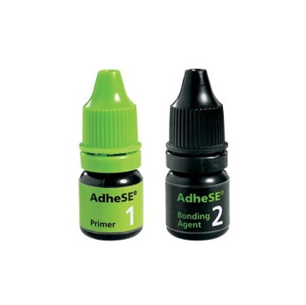
Pengertian: generasi ketujuh menggabungkan etsa, primer, dan bonding resin dalam satu botol (all-in-one).
Karakteristik: prosedur paling sederhana pada masanya. Material: campuran monomer asam hidrofilik, HEMA, dan monomer hidrofobik dalam satu larutan.
Kelebihan: sangat cepat, satu langkah aplikasi. Kekurangan: kekuatan ikatan lebih rendah dibanding generasi 4-5, rentan terhadap phase separation.
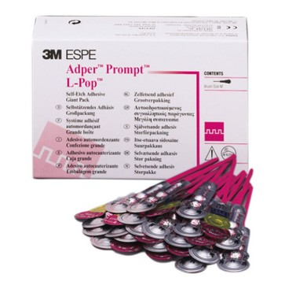
Pengertian: adhesive universal dapat digunakan dalam mode etch-and-rinse, self-etch, atau selective etching dalam satu produk.
Karakteristik: mengandung monomer fungsional MDP untuk ikatan kimiawi jangka panjang terhadap hidroksiapatit. Kompatibel dengan berbagai material restorasi (komposit, semen resin, GIC).
Kelebihan: fleksibilitas teknik, ikatan kimiawi stabil, shelf life panjang. Kekurangan: harga lebih tinggi, beberapa produk masih menunjukkan variabilitas klinis.
Van Meerbeek et al., 2020, J Adhes Dent, 22(1), 7–34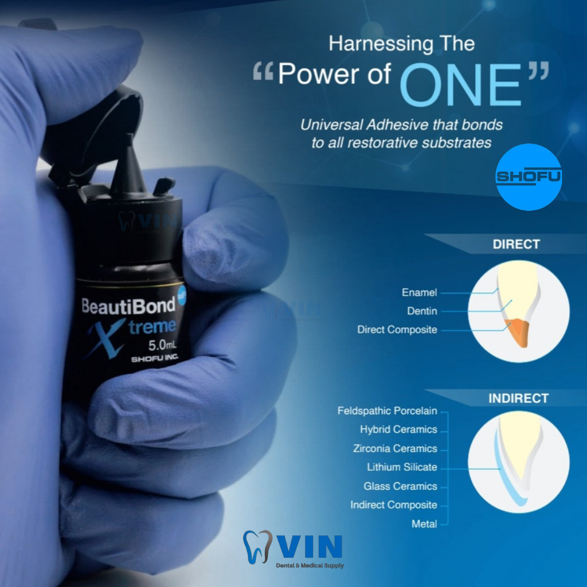